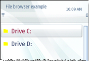

Modifying applications to support single-tap
Symbian^3 enhances the touch interaction by providing
support for single-tap.
S60 5th
Edition introduced touch support feature with double-tap to maintain
binary and source code compatibility with the existing S60 3.x applications.
The UI was focus driven, with the first tap for object selection (the
corresponding event forwarded to the application) and the second tap
for activation.
Symbian^3 enhances the touch support with single
tap for achieving better usability and development of platform and
3rd party applications. The supporting UI is based on direct manipulation
and is not focus driven, which means that a single-tap on the device
selects and activates an event. This change modifies the touch behavior
of certain UI components as listed below:
By default, none of the menu items are highlighted.
Item specific options are displayed in stylus menus rather
than in options menus.
The side toolbar is hidden in the landscape layout view except
in specific applications like the message viewer and editor.
It is highly recommended that you migrate your applications
to single-tap to complement the platform UI behavior. However, if
you do not migrate your applications to single-tap, they work the
same way as in S60 5th Edition (touch support with double-tap).
- Include
the EAknTouchCompatible and EAknSingleClickCompatible flags in your application's UI (CAknAppUi ) constructor.
For example,
void CFileBrowseBaseView::ConstructL() //Called from framework (CEikDocument)
{
...
BaseConstructL(EAknEnableSkin | EAknEnableMSK | EAknTouchCompatible | EAknSingleClickCompatible);
...
}
The EAknTouchCompatible flag enables touch
functionality. The EAknSingleClickCompatible flag
enables single-click functionality on the Symbian device.
The following illustrations show how applications behave
before and after the single-tap changes are made:
Figure 1. Double-tap enabled: By default, UI component is highlighted.

Figure 2. Single-tap enabled: By default, no UI component is highlighted.
- Hide item-specific
commands from the application's menus, submenus and toolbars.
Item-specific commands are functions that are specific to an item.
For example, Edit is an item-specific command for an existing
contact in the Phone book.
As a result, all item-specific options are hidden in
menus, submenus and toolbars and are displayed in the stylus popup menus.
- Activate items in
a list on single-tap.
- Disable stylus popup
menu in AVKON lists.
- Disable hardware
key shortcuts.
Copyright ©2010 Nokia Corporation and/or its subsidiary(-ies).
All rights
reserved. Unless otherwise stated, these materials are provided under the terms of the Eclipse Public License
v1.0.